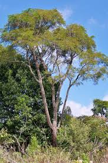
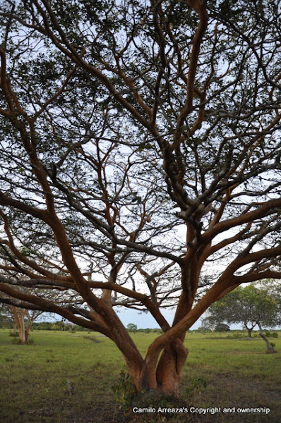

El Yopo es un árbol nativo de las regiones tropicales de América. Es conocido por su resistencia y por su capacidad para mejorar suelos degradados. Este árbol puede crecer en suelos pobres y ayuda a fijar nitrógeno, contribuyendo a la fertilidad del suelo. Es ideal para proyectos de restauración de suelos y ecosistemas deteriorados.
El Flor Amarillo es un árbol muy apreciado por su vistoso follaje y flores doradas que dan vida y color a los paisajes. Este árbol no solo es una adición estética, sino que también contribuye a la biodiversidad, proporcionando hábitats para numerosas especies de aves e insectos.

El Algarrobo es un árbol de gran resistencia a la sequía, adaptado a climas áridos y semiáridos. Su madera es fuerte y duradera, usada en carpintería y construcción. Además, el fruto del Algarrobo, conocido como algarroba, tiene múltiples usos en la alimentación animal y humana, lo que hace de este árbol una excelente elección para proyectos de reforestación.

El Madroño es un árbol nativo que prospera en ambientes húmedos y es altamente valorado en la conservación del agua y el suelo. Sus frutos atraen a la fauna local, lo que ayuda a mantener la biodiversidad. Es ideal para proyectos de reforestación en zonas de alta humedad.

Este árbol tiene propiedades medicinales. Su aceite es conocido por sus beneficios en la cosmética y la medicina tradicional. Este árbol es muy adaptable y se cultiva tanto por sus usos medicinales como por su capacidad de mejorar la calidad del suelo.
